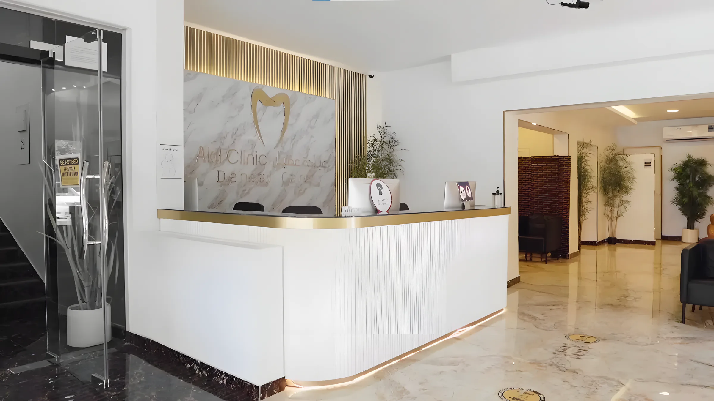
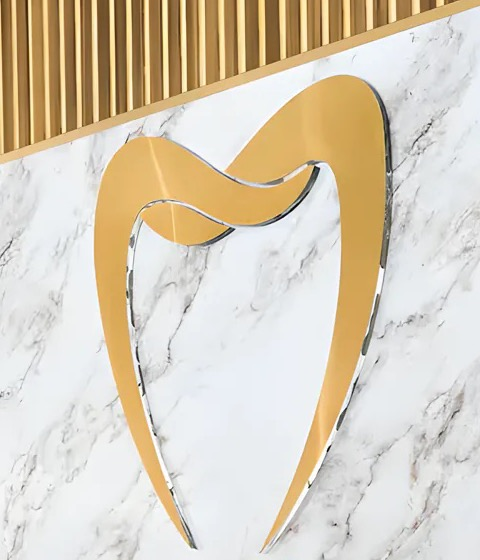
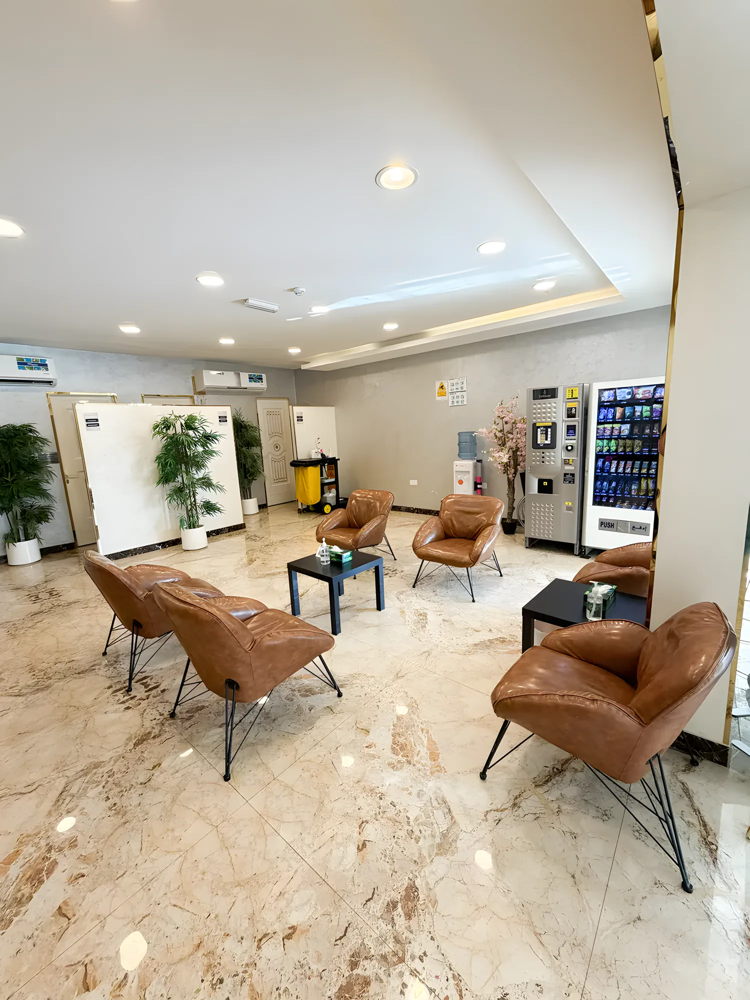
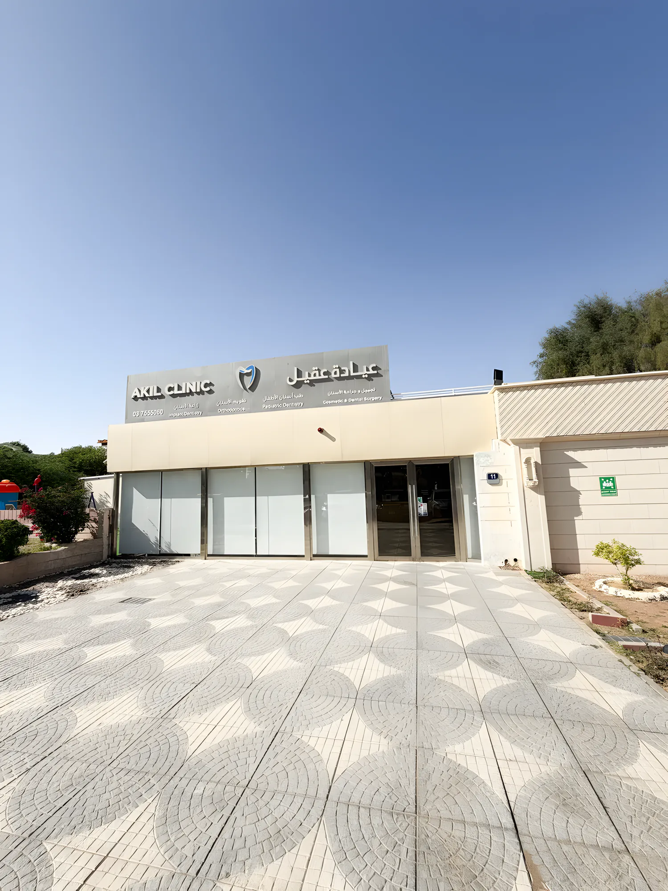

We get to know you both
The dentist and staff take time to get to know you and your child. If you have any worries, tell us before the exam.
عيادة عقيلDental Care · Khalifa Street, Al Ain

Open nowKhalifa St., Al Ain · Sat–Thu 9am–9pm
A family dental clinic in the heart of Al Ain. We look after adults and children: check-ups and fillings, implants, braces and cosmetic work.
That is the idea Akil Clinic was built on: a small, boutique clinic in Al Ain, run to international standards, where patients feel at home.
Every treatment room has the latest equipment, from reputable international brands. And we keep treatment as conservative as we can: the least destructive method that saves as much of your own tooth as possible.

The gold tooth on the reception wall
Dental care for the whole family, from a child's first check-up to implants. Tap a treatment for what it involves.
Not sure which one you need? Call 03 755 5060 and book a consultation.

Certified Oral Implantologist and Member of the American Academy of Implant Dentistry (AAID). General, cosmetic and implant dentistry.
Earlier, he taught for more than five years at the School of Dentistry of Ajman University of Science and Technology, supervising over 300 pre-doctoral dental students. Read his full profile
Bring your child when the first tooth comes in, and no later than their first birthday. Here is what happens on the day.
The dentist and staff take time to get to know you and your child. If you have any worries, tell us before the exam.
We show your child the chair and the instruments in a fun, imaginative way, so nothing comes as a surprise.

A thorough exam, X-rays if needed, a cleaning and fluoride. Then the dentist sits with you and goes through what we found and what, if anything, needs doing.
Fillings and bigger treatments wait for a later visit, once your child knows us. A toothache can be treated on the first day if time and your child allow.

We finish with a tour of the clinic. Your child goes home with stickers, a prize, a toothbrush and floss, and you get a written summary of their teeth.
Drag or swipe through. This is what you'll see when you walk in on Khalifa Street.


Anything else, call us on 03 755 5060 or email info@akilclinic.com.
One treatment of 45 to 60 minutes, and you go home the same day. We check your teeth and gums first to make sure whitening is right for you.
Not the way it used to be. With today's anaesthetics, most patients report practically no discomfort during the procedure. Most teeth need a crown afterwards to seal them.
With good care, a very long time: 50 to 80 percent of crowns last 15 to 20 years. We give you tips to look after yours.
When the first tooth comes in, and no later than their first birthday.
With regular maintenance, porcelain veneers could last a lifetime. They look natural, are matched to your other teeth, and resist stains from coffee and smoking.
Call 03 755 5060 or email info@akilclinic.com. We're open Saturday to Thursday, 9am to 9pm.
Khalifa St. 18736, Al Ain
In the heart of Al Ain, on Khalifa Street. Look for the grey Akil Clinic sign.
| Saturday | 9am – 9pm |
| Sunday | 9am – 9pm |
| Monday | 9am – 9pm |
| Tuesday | 9am – 9pm |
| Wednesday | 9am – 9pm |
| Thursday | 9am – 9pm |
| Friday | Closed |
Ask us about your insurance: call 03 755 5060 before your visit.
Fax 03 755 3009 · info@akilclinic.com